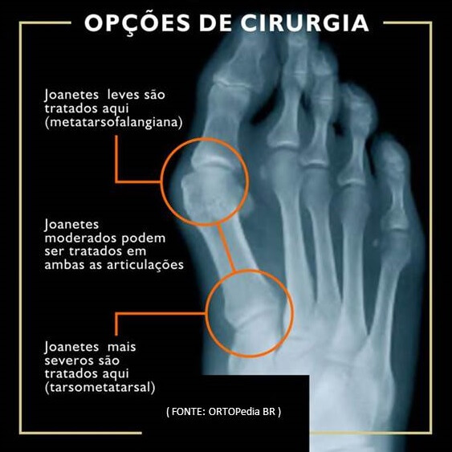

Um sofrimento que tem cura
Dor, desconforto e até constrangimento é o que passa quem tem um joanete no pé. Não apenas pela estética, a dificuldade de encontrar um sapato adequado que possa também disfarçar ou mesmo esconder a deformação, mas, principalmente, que não comprima a saliência por si só já tão dolorida, é um mal que apenas quem sofre sabe exatamente o quanto incomoda.
E foi pensando nesses pacientes que resolvemos unir nosso conhecimento e experiência de médicos ortopedistas que somos para escrever sobre este tema, ajudar com informações esclarecedoras e motivadoras à procura de um tratamento verdadeiramente eficaz.
Para início de conversa, saiba que aquela ideia de serração de osso e dois meses ou mais de recuperação dolorosa e inconveniente já é coisa do passado. Então, olhe agora para o seu joanete e se anime com a possibilidade de cura por meio de técnicas evoluídas e acessíveis. Para isso, vamos entender o que é de fato um joanete, suas causas, sintomas e opções de tratamento.
Quando você terminar de ler este artigo terá a certeza de que o seu sofrimento com joanetes pode ter os dias contados para chegar ao fim!
Joanetes - O que é?
Muita gente pensa que joanete é um calo ósseo devido a um crescimento excessivo e patológico de uma nova estrutura óssea ou do mesmo osso, mas a verdade é que não se trata de alongamento ósseo e sim um desvio, um desalinhamento entre os ossos e as articulações que compõem o pé, causando uma subluxação nas articulações do hálux e/ou demais dedos.
Para entender melhor essa deformação, precisamos conhecer a estrutura original e o que ela sofre para que se desalinhe e seja alterada anatomicamente:
ANATOMIA DO PÉ
Formado por músculos, ligamentos, articulações, ossos e tendões. De fato uma estrutura bem complexa devido suas inúmeras funcionalidades específicas para atender a função global de locomoção.
Uma verdadeira engenharia! E qualquer desvio de base pode ser desastroso, com danos relevantes.
Sua forma de arco serve como uma alavanca a impulsionar o corpo em marcha, possibilitando pisar em diferentes solos de forma adequada, distribuindo o peso harmoniosamente para que se mantenha o equilíbrio.
Por conta de suas diversas funções e sobrecargas é natural que ocorram desgastes e alterações anatômicas, como o joanete, cientificamente chamado de hálux valgo ou hallux valgus; uma saliência óssea localizada, geralmente, na cabeça do primeiro metatarso, osso que liga o dedo ao centro do pé.
Portanto, é nessa articulação metatarsofalangeana do hálux (dedão) que pode ocorrer mais comumente o desvio lateral desse osso em direção ao segundo dedo.
Mas, outra possibilidade de local de desenvolvimento de joanete é o desvio do quinto osso metatársico na base do dedo mínimo (mindinho), sendo assim conhecido como joanete de sastre ou joanete de alfaiate.
Mas, o que causa joanetes?
Existem vários fatores que podem desencadear o joanete. Entre eles, listando por ordem de maior frequência, temos:
Fatores genéticos:
- O pé que tem o primeiro dedo anatomicamente maior que os demais tem forte tendência a ser acometido por joanete, devido à constante compressão causada por calçados inadequados;
- Algumas pessoas já nascem com desvio lateral do hálux, sendo considerado um fator congênito;
- A hereditariedade ocupa 60% de possibilidade na lista de fatores de risco, tornando os históricos familiares dados imprescindíveis para avaliação pelos médicos ortopedistas responsáveis por concluir diagnósticos de joanetes;
- Outros casos de instabilidade biomecânica, associados a anormalidades como: pés chatos, ligamentos e tendões frágeis, varo do antepé, entre outras, também podem ser causadores de hálux valgo.
Fatores Mecânicos:
- Doenças reumáticas, tais como gota, lúpus, artrite reumatoide e psoriática;
- Doenças neurológicas, tais como AVC, paralisia cerebral, Síndrome de Charcot Marie Tooth, traumas na medula, entre outras;
- Doenças do tecido conjuntivo, tais como Síndrome de Marfan, Síndrome de Ehlers-Danlos, Síndrome de Down e afrouxamentos ligamentares que facilitam o desenvolvimento do joanete.
Fatores traumáticos (hábitos e acidentes):
- O principal fator traumático por hábito é a utilização de forma regular de sapatos inadequados, os quais deixam o hálux em constante posição de valgo, principalmente para quem já tem a predisposição por outros fatores de risco de joanetes. Os sapatos de salto alto prejudicam a superfície de apoio e a distribuição do peso do corpo, projetando o pé para frente; os de bico fino desviam o dedão e comprimem o dedo mínimo.
- Outra causa de fator traumático é por acidente, como uma fratura mal curada, ou uma luxação, ou ainda uma entorse grave na primeira articulação metatarsofalangeana.
De uma forma geral, o joanete acomete mais adultos que crianças, por conta do desgaste funcional que ocorre durante os anos de vida, e, principalmente nas mulheres, por conta do hábito dos sapatos de bico fino e salto alto que maximizam os fatores causadores.
Porém, quase sempre, o que ocorre mesmo é uma junção de não só um, mas de vários desses fatores de risco citados, os quais desnivelam a estrutura base natural do pé e provocam o desvio causador da deformidade óssea.
E o que sofre quem tem joanetes?
São várias as queixas de pacientes que sofrem com joanetes. Entre esses principais sintomas podemos citar:
- Dor especificamente localizada no joanete, inconstante e moderada no início da doença, e, na medida em que avança a deformação, agrava a intensidade repentinamente e torna-se constante, sem que cesse nem mesmo com repouso, sendo preciso idas emergenciais ao médico ortopedista especialista em pé;
- Bursite na articulação metatarsofalangeana, com sintomas de rubor, calor e dor ainda mais específica, podendo inflamar também, além da bursa, a pele, que fica espessa, compondo o popularmente chamado “calo”;
- Aumento do tamanho do joanete, quando não é tratado logo por um médico ortopedista especialista em pé. Geralmente, a protuberância torna-se evidente por volta dos 40 anos de idade, pois a deformação é progressiva e se dá muito lentamente
- Possível desvio do dedão, com a deformidade, pode migrar para debaixo do segundo e até do terceiro dedo do pé:
- Dificuldade para encontrar calçados apropriados, que consigam oferecer conforto e descrição aos pés deformados. Reforçando que o uso de sapatos inadequados agrava o quadro, principalmente quando o metatarso se desvia para parte interna do pé, inclinando o dedão para baixo dos outros dedos, produzindo a deformação proeminente no ângulo para o desenvolvimento e/ou evolução do joanete. Quando isso acontece também há possibilidade de formação de calosidade na pele por conta do atrito contínuo;
- Rigidez do dedo acometido de forma progressiva
- Abalo emocional por todo desconforto, preocupação e até mesmo constrangimento causado pela deformação.
Importante saber que há casos assintomáticos de joanetes, geralmente ainda nas fases iniciais. Portanto, a qualquer sinal, o melhor é procurar o quanto antes um médico ortopedista especialista em pé para evitar que o quadro evolua e cause sofrimentos que podem ser evitados.
Como saber ao certo que se tem um joanete no pé?
Para obter um diagnóstico assertivo é imprescindível uma avaliação clínica profissional, pois trata-se de uma doença progressiva, por vezes sem sintomas nas fases iniciais ou com sintomas instáveis, os quais só podem ser analisados por um médico especialista em pé.
Para chegar a esse diagnóstico é levado em conta, além dos sintomas, a análise da estrutura óssea do pé, por meio de exames clínicos e de raio X, a fim de detectar as possíveis deformidades, lesões e qualquer indício de joanete.
Geralmente, o médico ortopedista examina o paciente tanto em pé quanto sentado, para que tenha como verificar ocorrências anatômicas como pé chato ou adução de metatarso, assim como para que seja também avaliada a funcionalidade da articulação metatarsofalangeana, a posição do hálux no ângulo transversal e frontal, a mobilidade do primeiro raio na articulação tarsometatársica, se há incidência de pronação em excesso devido queratose plantar sob a articulação interfalangeal do hálux, e demais deformidades associadas como dedo em garra, em martelo, cruzamento, entre outras.
O médico especialista em pé também poderá avaliar o grau de evolução do joanete, classificando-o como leve, moderado, alto e severo.
Sendo estes últimos níveis passíveis de deformidade em alto grau, chegando ao desvio do hálux para dentro, com cruzamento por baixo do segundo e até do terceiro dedo do pé.
Quando ainda está no início da doença, o médico ortopedista tem como analisar a formação ainda em evolução do joanete pelo ângulo intermetatársico, criado pela bissecção do eixo longitudinal do primeiro com o segundo metatarso, o qual deve ser igual ou menor que 8 graus.
E quando foge desse padrão natural, já é uma indicação de anormalidade propícia ao hálux valgo.
Outra avaliação feita também é em relação a alterações artríticas e congruências na articulação metatarsofalangeana do hálux.
Portanto, não feche os olhos para os sintomas de joanetes. Melhor procurar uma avaliação profissional séria para que se obtenha um diagnóstico assertivo em tempo hábil para o devido tratamento, de maneira menos traumática possível.
Como tratar joanetes?
TRATAMENTOS CONSERVADORES em fases iniciais ajudam a conter os sintomas e desacelerar a progressão da doença. Para isso, o médico ortopedista pode indicar o uso de sapatos apropriados com frente mais larga para acomodar melhor os dedos, sem pressioná-los, além de eliminar o uso dos saltos altos que desestabilizam a planta do pé.
Alguns medicamentos também podem ser utilizados quando há necessidade, dependendo do caso, de anti-inflamatórios e analgésicos.
Órteses, protetores ortopédicos e espaçadores de dedos também são auxiliares de recursos terapêuticos para melhor conviver com a deformidade e seus desconfortos.
Dicas como aplicar gelo sobre o joanete de fato ajuda a aliviar a dor e minimizar inflamações, porém, toda e qualquer ação de tratamento deve ser indicada e acompanhada somente pelo médico ortopedista especialista em pé.
Para corrigir a deformidade, o caminho é a intervenção cirúrgica. Mas isso vai depender da avaliação médica em relação ao paciente, analisando idade, estilo de vida, saúde, grau de evolução do joanete e seus respectivos sintomas, enfim, é uma decisão tomada em conjunto e pensando de uma forma geral no quadro clínico do paciente e seu bem estar.
O TRATAMENTO CIRÚRGICO é a opção corretiva para deformidade do hálux valgo que visa realinhar o osso e os tecidos moles. E dependendo do grau de evolução da deformidade é que se pode determinar a opção de intervenção.
Cada caso é uma especificação diferente a ser analisada e tratada de forma única, mas, via de regra, de uma forma generalizada, indica-se para:
Existem várias técnicas cirúrgicas para correção de joanete, e a boa notícia é justamente a evolução da ortopedia para resolver o incômodo de cirurgias abertas, em que a recuperação e mais lenta, com mais dor pós-cirúrgica.
Estamos nos referindo à solução com menor trauma possível para tratamento definitivo de joanete que é a cirurgia percutânea, minimamente invasiva do pé: MIS - Minimally invasive surgery.
Um procedimento que, em alguns casos, não precisa dormir no hospital, nem tomar anestesia geral, raquidiana ou peridural, podendo ser feita com anestesia local e sedação, o que favorece os cardíacos e elimina os riscos dos efeitos colaterais pós-anestésicos.
São feitas mini-incisões, em média três furos feitos com pequenos bisturis, para inserir a ponta de brocas/drill (as mini fresas) conectadas à um motor que promove a rotação das brocas (semelhante ao do dentista).
Um fluoroscópio (aparelho de RX dinâmico) transmite a imagem interna do pé em um monitor, para que o cirurgião visualize e faça o procedimento.
A cirurgia minimamente invasiva do pé - MIS - Minimally invasive surgery - apresenta inúmeras vantagens em relação á cirurgia convencional, entre elas: menor agressão cirúrgica, menos sangramento, menos dor, menor risco de infecçao, reabilitação mais precoce, menor tempo de internação (paciente pode ir de alta no mesmo dia da internação, algumas horas após o procedimento).
Com a cirurgia minimamente invasiva do pé - MIS- Minimally invasive surgery - o resultado é efetivo, sem risco de volta da deformidade, pois há a correção definitiva do osso e tecidos moles adjacentes, com retorno às atividades cotidianas e possibilidade de carga no pé operado logo após a cirurgia.
Se o seu pé estiver dolorido, com alguma alteração de formato, aparência, ou mesmo se já estiver sofrendo com a deformidade de um ou mais joanete, não perca tempo, não perpetue sofrimento, procure hoje mesmo um médico ortopedista especialista em pé e converse sobre a possibilidade de um tratamento eficaz, sem incômodos e adequado para o seu caso.
Leia também: Evolução da ortopedia acaba com sofrimento no joanete.